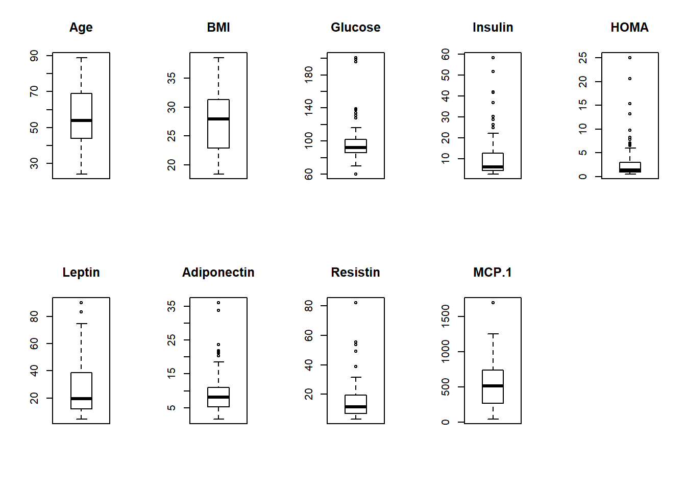
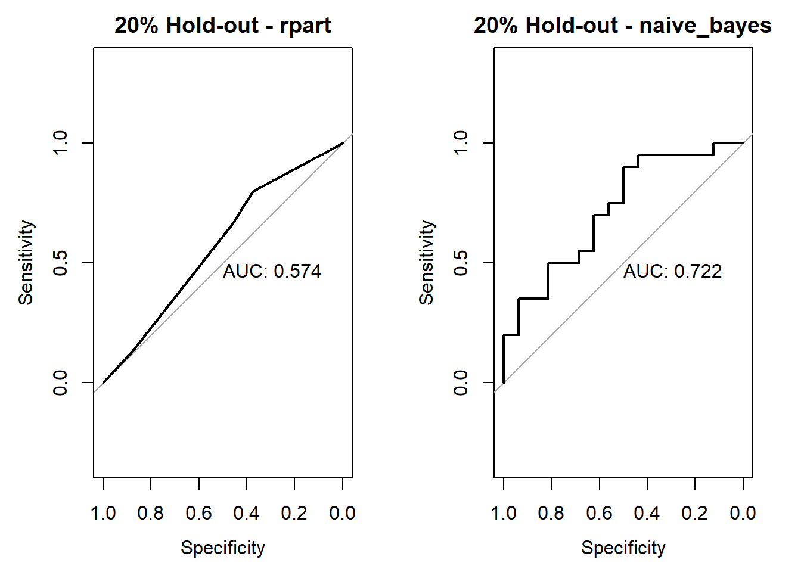
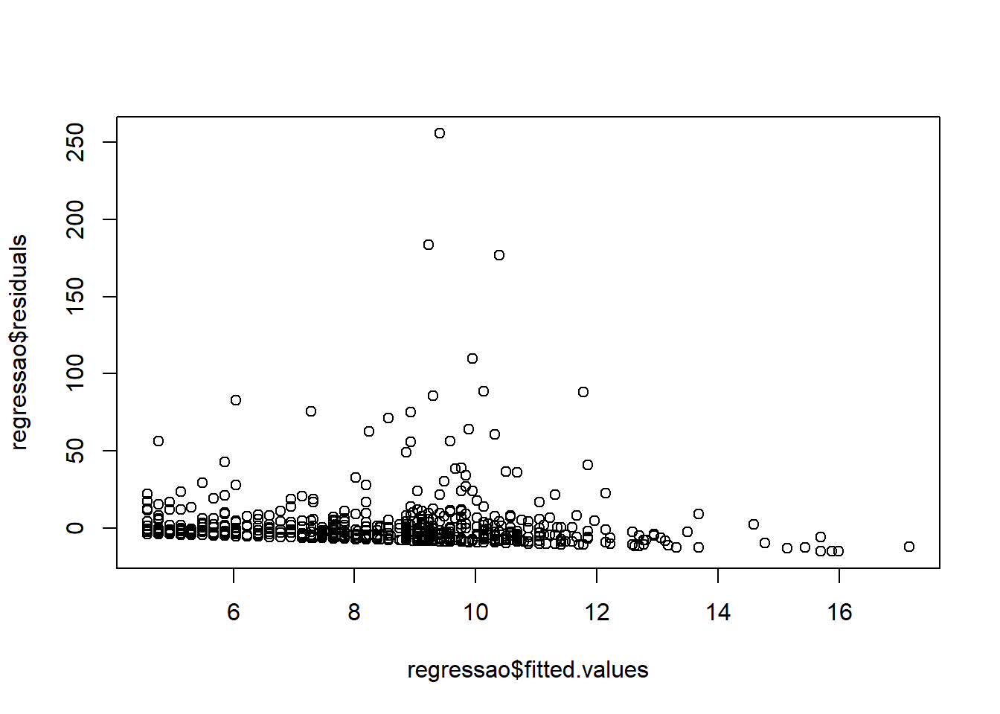
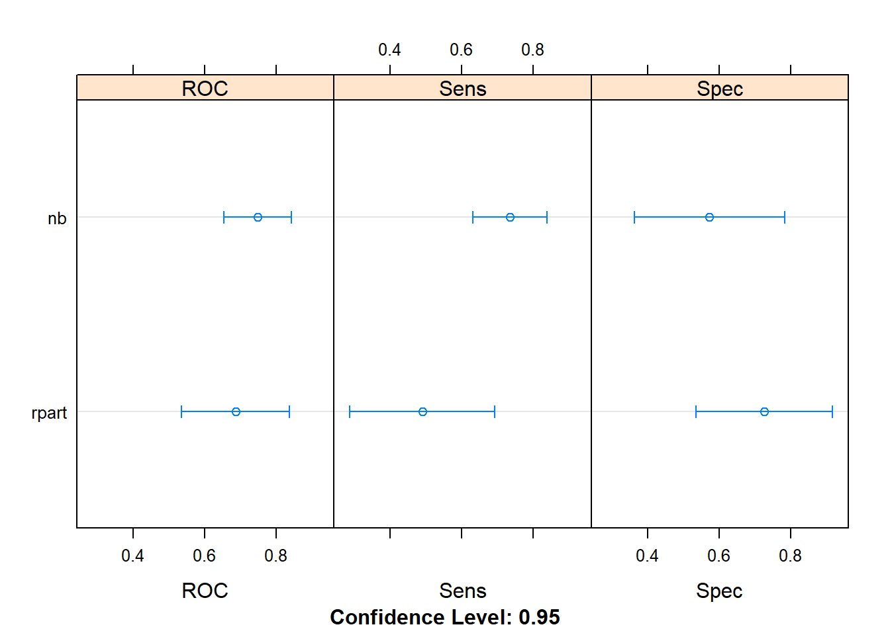
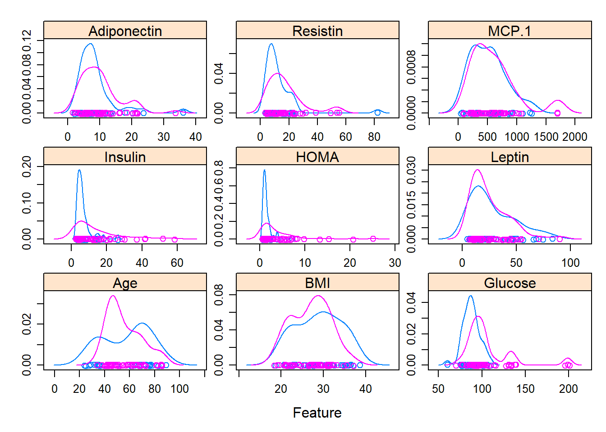
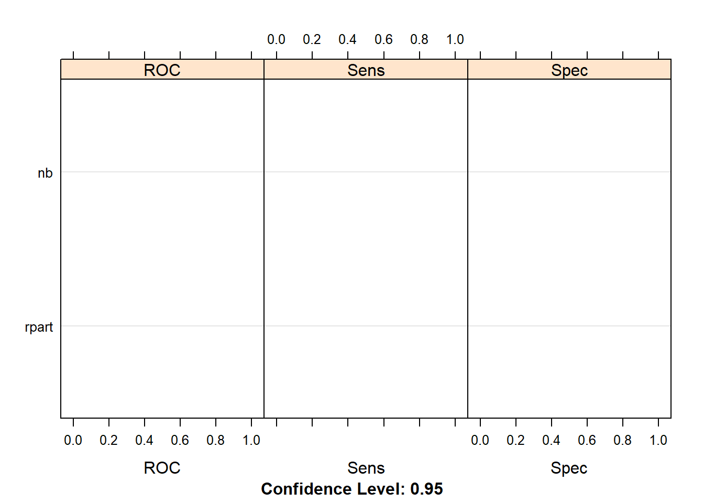

4.1 Lesson 1
2020-02-04
This exercise was done as described by: https://machinelearningmastery.com/machine-learning-in-r-step-by-step/
but using a data set from: https://archive.ics.uci.edu/ml/datasets/Breast+Cancer+Coimbra#
Read the data
Factor variable Classification
NOTE: in order to use the caret packages in all its’ capabilities you must do install.packages("caret", dependencies = T)
create a validation dataset and use the remaing for training
library(caret)
# create a list of 80% of the rows in the original dataset we can use for training
validation_index <- createDataPartition(dataset$Classification, p=0.80, list=FALSE)
# select 20% of the data for validation
validation <- dataset[-validation_index,]
# use the remaining 80% of data to training and testing the models
dataset <- dataset[validation_index,]dimensions of the new dataset
## [1] 94 10list types for each attribute
## Age BMI Glucose Insulin HOMA
## "integer" "numeric" "integer" "numeric" "numeric"
## Leptin Adiponectin Resistin MCP.1 Classification
## "numeric" "numeric" "numeric" "numeric" "factor"take a peek at the first 5 rows of the data
| Age | BMI | Glucose | Insulin | HOMA | Leptin | Adiponectin | Resistin | MCP.1 | Classification | |
|---|---|---|---|---|---|---|---|---|---|---|
| 2 | 83 | 20.69049 | 92 | 3.115 | 0.7068973 | 8.8438 | 5.429285 | 4.06405 | 468.786 | 1 |
| 4 | 68 | 21.36752 | 77 | 3.226 | 0.6127249 | 9.8827 | 7.169560 | 12.76600 | 928.220 | 1 |
| 5 | 86 | 21.11111 | 92 | 3.549 | 0.8053864 | 6.6994 | 4.819240 | 10.57635 | 773.920 | 1 |
| 6 | 49 | 22.85446 | 92 | 3.226 | 0.7320869 | 6.8317 | 13.679750 | 10.31760 | 530.410 | 1 |
| 7 | 89 | 22.70000 | 77 | 4.690 | 0.8907873 | 6.9640 | 5.589865 | 12.93610 | 1256.083 | 1 |
| 9 | 73 | 22.00000 | 97 | 3.350 | 0.8015433 | 4.4700 | 10.358725 | 6.28445 | 136.855 | 1 |
list the levels for the class
## [1] "1" "2"summarize the class distribution
percentage <- prop.table(table(dataset$Classification)) * 100
cbind(freq=table(dataset$Classification), percentage=percentage)| freq | percentage |
|---|---|
| 42 | 44.68085 |
| 52 | 55.31915 |
summarize attribute distributions
| Age | BMI | Glucose | Insulin | HOMA | Leptin | Adiponectin | Resistin | MCP.1 | Classification | |
|---|---|---|---|---|---|---|---|---|---|---|
| Min. :24.00 | Min. :18.37 | Min. : 60.00 | Min. : 2.540 | Min. : 0.5079 | Min. : 4.47 | Min. : 1.656 | Min. : 3.210 | Min. : 45.84 | 1:42 | |
| 1st Qu.:44.25 | 1st Qu.:22.95 | 1st Qu.: 86.00 | 1st Qu.: 4.350 | 1st Qu.: 0.9343 | 1st Qu.:12.21 | 1st Qu.: 5.375 | 1st Qu.: 6.899 | 1st Qu.: 277.91 | 2:52 | |
| Median :54.00 | Median :27.90 | Median : 92.00 | Median : 6.036 | Median : 1.3933 | Median :19.59 | Median : 8.128 | Median :11.669 | Median : 516.12 | NA | |
| Mean :56.46 | Mean :27.83 | Mean : 97.85 | Mean :10.694 | Mean : 2.9175 | Mean :26.32 | Mean : 9.537 | Mean :15.259 | Mean : 564.09 | NA | |
| 3rd Qu.:69.00 | 3rd Qu.:31.25 | 3rd Qu.:101.75 | 3rd Qu.:12.487 | 3rd Qu.: 2.9926 | 3rd Qu.:38.57 | 3rd Qu.:10.962 | 3rd Qu.:18.986 | 3rd Qu.: 736.70 | NA | |
| Max. :89.00 | Max. :38.58 | Max. :201.00 | Max. :58.460 | Max. :25.0503 | Max. :90.28 | Max. :36.060 | Max. :82.100 | Max. :1698.44 | NA |
split input and output
boxplot for each attribute on one image

barplot for class breakdown

scatterplot matrix
scales <- list(x=list(relation="free"), y=list(relation="free"))
featurePlot(x=x, y=y, plot="ellipse")
box and whisker plots for each attribute
scales <- list(x=list(relation="free"), y=list(relation="free"))
featurePlot(x=x, y=y, plot="box", scales=scales)
density plots for each attribute by class value
scales <- list(x=list(relation="free"), y=list(relation="free"))
featurePlot(x=x, y=y, plot="density", scales=scales)
Run algorithms using 10-fold cross validation
- linear algorithms
set.seed(7)
fit.lda <- train(Classification~., data=dataset, method="lda", metric=metric, trControl=control)- nonlinear algorithms CART
set.seed(7)
fit.cart <- train(Classification~., data=dataset, method="rpart", metric=metric, trControl=control)kNN
set.seed(7)
fit.knn <- train(Classification~., data=dataset, method="knn", metric=metric, trControl=control)- advanced algorithms SVM
set.seed(7)
fit.svm <- train(Classification~., data=dataset, method="svmRadial", metric=metric, trControl=control)Random Forest
set.seed(7)
fit.rf <- train(Classification~., data=dataset, method="rf", metric=metric, trControl=control)summarize accuracy of models
results <- resamples(list(lda=fit.lda, cart=fit.cart, knn=fit.knn, svm=fit.svm, rf=fit.rf))
summary(results)##
## Call:
## summary.resamples(object = results)
##
## Models: lda, cart, knn, svm, rf
## Number of resamples: 10
##
## Accuracy
## Min. 1st Qu. Median Mean 3rd Qu. Max. NA's
## lda 0.5555556 0.6166667 0.6666667 0.6875758 0.7583333 0.9090909 0
## cart 0.3636364 0.5555556 0.6333333 0.6141414 0.6666667 0.8888889 0
## knn 0.4000000 0.4444444 0.5555556 0.5816162 0.7121212 0.8000000 0
## svm 0.5555556 0.6666667 0.7388889 0.7562626 0.8712121 1.0000000 0
## rf 0.6000000 0.6439394 0.7222222 0.7614141 0.8611111 1.0000000 0
##
## Kappa
## Min. 1st Qu. Median Mean 3rd Qu. Max. NA's
## lda 0.10000000 0.20192308 0.3414634 0.3735131 0.5125000 0.8135593 0
## cart -0.35087719 0.07518797 0.2371795 0.2074930 0.3330206 0.7804878 0
## knn -0.25000000 -0.15384615 0.1050657 0.1356022 0.4074316 0.6000000 0
## svm 0.05263158 0.30769231 0.4750000 0.4966348 0.7405383 1.0000000 0
## rf 0.16666667 0.25795756 0.4288462 0.5114090 0.7197802 1.0000000 0compare accuracy of models

summarize Best Model
## Random Forest
##
## 94 samples
## 9 predictor
## 2 classes: '1', '2'
##
## No pre-processing
## Resampling: Cross-Validated (10 fold)
## Summary of sample sizes: 85, 85, 83, 84, 84, 85, ...
## Resampling results across tuning parameters:
##
## mtry Accuracy Kappa
## 2 0.7614141 0.5114090
## 5 0.7058586 0.3961943
## 9 0.6836364 0.3543126
##
## Accuracy was used to select the optimal model using the largest value.
## The final value used for the model was mtry = 2.estimate skill of LDA on the validation dataset
## Confusion Matrix and Statistics
##
## Reference
## Prediction 1 2
## 1 4 3
## 2 6 9
##
## Accuracy : 0.5909
## 95% CI : (0.3635, 0.7929)
## No Information Rate : 0.5455
## P-Value [Acc > NIR] : 0.418
##
## Kappa : 0.1538
##
## Mcnemar's Test P-Value : 0.505
##
## Sensitivity : 0.4000
## Specificity : 0.7500
## Pos Pred Value : 0.5714
## Neg Pred Value : 0.6000
## Prevalence : 0.4545
## Detection Rate : 0.1818
## Detection Prevalence : 0.3182
## Balanced Accuracy : 0.5750
##
## 'Positive' Class : 1
## In this post you discovered step-by-step how to complete your first machine learning project in R